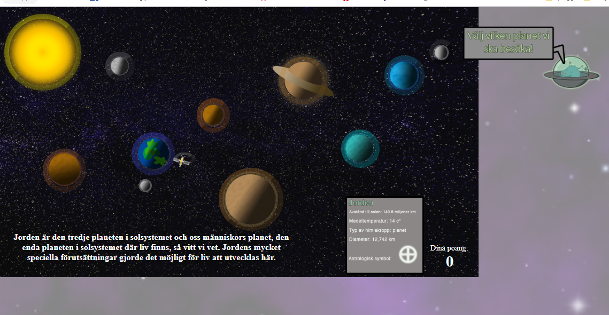
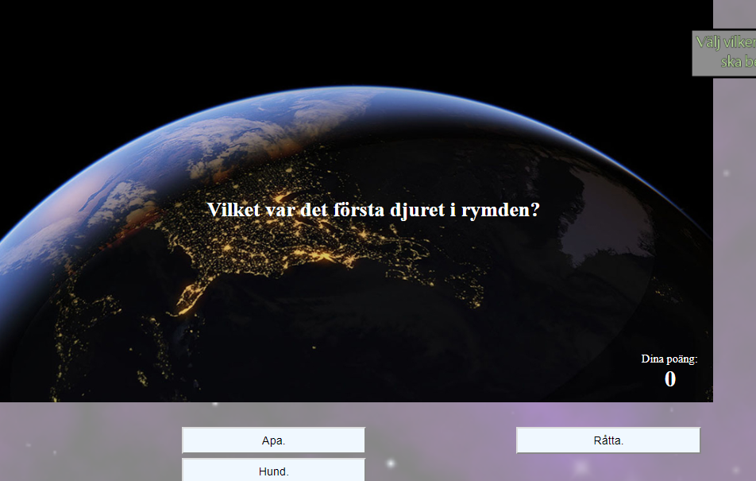

Spootninks Äventyr är ett lärande spel som fokuserar på att lära ut rymdutforskning och dess historia.
Målgruppen var mellanstadie elever. Spelet är ett point and click spel där man spenderar majorieteten av tiden
i en karta över solsystemet samt i olika quizar om planeterna man besöker i egen ordning. När spelaren utforskat hela solsystemet
så har man spelat klart spelet och man får ett betyg i poäng som visar hur bra man gjort ifrån sig.
Lärande syftet var att för spelaren att lära sig om rymdutforskning och dess historia. När vi tänkte ut spelet, hade vi ARCS-teorin i bakhuvudet.
Enligt ARCS kan man väcka intresse genom att ha ett friare upplägg, kul design och storytelling så att spelaren känner att den är i kontroll och får välja själv
vilken ordning den vill ta sig igenom informationen.
När du besöker en planet så får du 3 olika frågor, när du svarat på dom så får du ett betyg som är menat att ge spelaren feedback på hur mycket den har lärt sig. Feedbacken
ska vara uppmuntrande så att spelaren ska villja spela om spelet så att den får alla rätt på quizarna, så att den känner sig nöjd med sig själv vilket också är olika delar
ARCS hävdar hjälper lärande.
Vi har i grupp löst denna uppgift, jag kodade för det mesta samt kollade upp lite information om vissa planeter till quizen.
Vi tog mycket av vår kunskap från quiz uppgiften och implementerade mycket av det i det här projektet. Dock använder vi knappar istället
för kanvasen som vi gjorde i den uppgiften. Det vi i huvudsak använder för att göra spelet är Knappar, statiska bilder och canvas.

